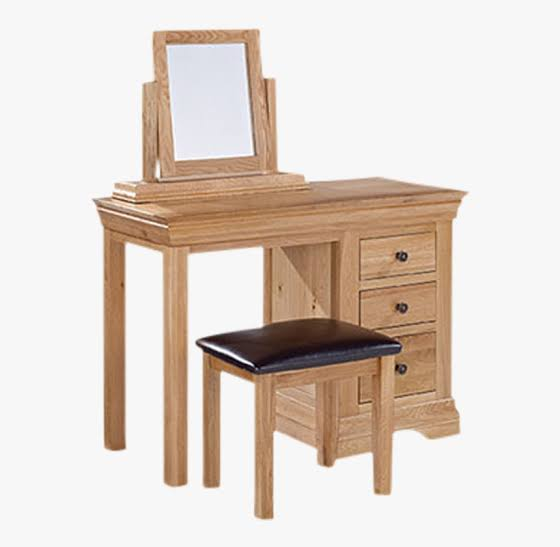
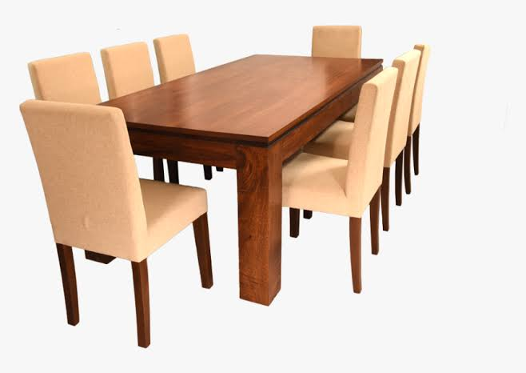
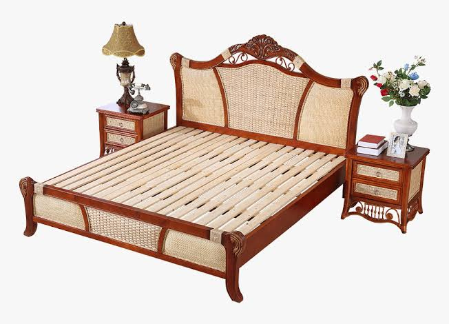
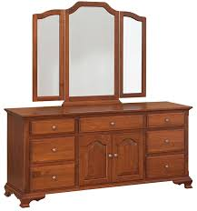
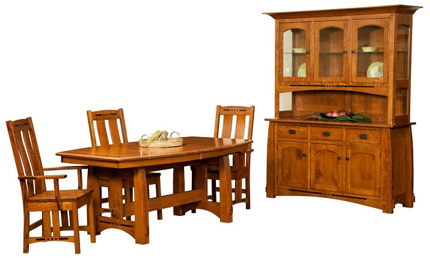
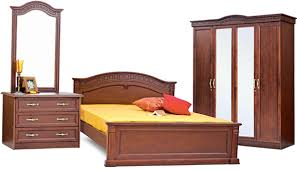

Furniture refers to movable objects intended to support various human activities such as seating (e.g., Stools, Chairs, and sofas), eating (tables), and sleeping (e.g., beds). Furniture is also used to hold objects at a convenient height for work (as horizontal surfaces above the ground, such as tables and desks), or to store things (e.g., cupboards and shelves). Furniture can be a product of design and is considered a form of decorative art. In addition to furniture's functional role, it can serve a symbolic or religious purpose. It can be made from many materials, including metal, plastic, and wood. Furniture can be made using a variety of woodworking joints which often reflect the local culture.

People have been using natural objects, such as tree stumps, rocks and moss, as furniture since the beginning of human civilization and continues today in some households/campsites.Archaeological research shows that from around 30,000 years ago, people started to construct and carve their own furniture, using wood, stone, and animal bones.

Early furniture from this period is known from artwork such as a Venus figurine found in Russia, depicting the goddess on a throne. The first surviving extant furniture is in the homes of Skara Brae in Scotland, and includes cupboards, dressers and beds all constructed from stone. Complex construction techniques such as joinery began in the early dynastic period of ancient Egypt.

The furniture of the Middle Ages was usually heavy, oak, and ornamented. Furniture design expanded during the Italian Renaissance of the fourteenth and fifteenth century. The seventeenth century, in both Southern and Northern Europe, was characterized by opulent, often gilded Baroque designs. The nineteenth century is usually defined by revival styles.The first three-quarters of the twentieth century are often seen as the march towards Modernism. One unique outgrowth of post-modern furniture design is a return to natural shapes and textures.

Seating is amongst the oldest known furniture types, and authors including Encyclopædia Britannica regard it as the most important. In additional to the functional design, seating has had an important decorative element from ancient times to the present day. This includes carved and sculpted pieces intended as works of art, as well as the styling of seats to indicate social importance, with senior figures or leaders granted the use of specially designed seats.

The simplest form of seat is the chair, which is a piece offurniture designed to allow a single person to sit down, which has a back and legs, as well as a platform for sitting.Chairs often feature cushions made from various fabrics.

All different types of woods have unique signature marks that can help in easy identification of the type. Both hardwoods and softwoods are used in furniture manufacturing, and each has its own specific uses.Common softwoods used include pine, redwood and yew. Higher quality furniture tends to be made out of hardwood, including oak, maple, mahogany, teak, walnut, cherry and birch. Highest quality wood will have been air dried to rid it of its moisture.